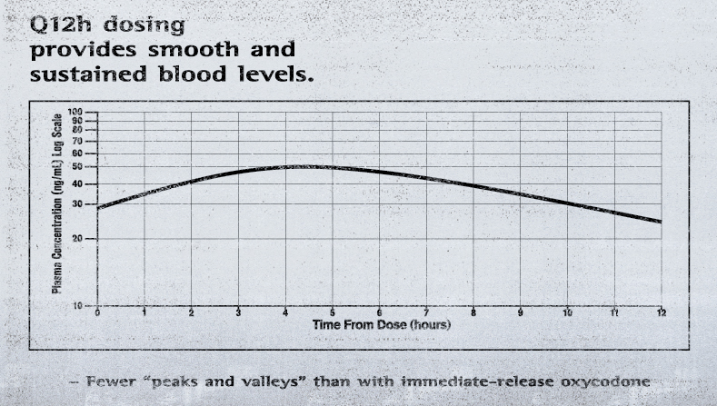

Análisis del gráfico manipulado de Purdue Pharma sobre el potencial adictivo.
Purdue Pharma comercializó OxyContin (oxicodona de liberación prolongada) basándose en la promesa de que proporcionaba un alivio constante del dolor durante 12 horas, lo que supuestamente lo hacía menos adictivo que los analgésicos de liberación inmediata.
Para sustentar esta afirmación, los representantes de ventas utilizaban un gráfico de la concentración plasmática (en sangre) que, visualmente, parecía "plano" y estable. Sin embargo, este gráfico clave utilizaba una escala logarítmica en el eje vertical (Concentración), un truco de visualización que minimizaba drásticamente la caída de la concentración del fármaco a mitad del ciclo de dosificación (antes de las 12 horas).
Utilice el selector de escala a continuación para alternar entre la versión engañosa y la versión real del gráfico de OxyContin.
Esta imagen representa el tipo de visualización que Purdue Pharma usó en su promoción, con el objetivo de demostrar falsamente la "consistencia" de la dosis de 12 horas.

Concentración Plasmática de OxyContin (Logarítmica)
La Escala Logarítmica comprime visualmente el rango de datos, haciendo que la caída entre las 8 y 12 horas parezca insignificante. Esto fue utilizado por Purdue para convencer a los médicos de que el medicamento duraba 12 horas.
El Resultado del Engaño:
Cuando el efecto del fármaco disminuía a las 8-10 horas (el "bajón"), muchos pacientes experimentaban síntomas de abstinencia, lo que falsamente interpretaban como la necesidad de una dosis más fuerte, no más frecuente. Esto llevó a la escalada de dosis, aumentando drásticamente el riesgo de adicción y sobredosis, y contribuyendo directamente a la crisis de opiáceos.
Este gráfico muestra la evolución de la crisis de opioides dividida en cuatro fases, según el tipo de droga predominante en las sobredosis. Las zonas sombreadas indican el período de predominio de cada ola.
Comenzó con la intensa comercialización de medicamentos como OxyContin (oxicodona), presentando el riesgo de adicción como insignificante. Los profesionales de la salud aumentaron drásticamente las recetas de opioides para el dolor crónico. Esta ola fue impulsada por el abuso de medicamentos legítimamente recetados, estableciendo la base para la crisis posterior.
Esta fase surgió como respuesta directa a los esfuerzos para frenar la Ola 1. Cuando las regulaciones se hicieron más estrictas (por ejemplo, la reformulación de OxyContin en 2010 para hacerlo difícil de aplastar y snifar) y el acceso a los opioides recetados se limitó, los usuarios desarrollaron una adicción y recurrieron a alternativas más baratas y disponibles ilegalmente, principalmente la heroína.
Marcada por el rápido aumento de las muertes por sobredosis relacionadas con opioides sintéticos como el fentanilo. El fentanilo es hasta 100 veces más potente que la morfina, y su bajo costo y facilidad de contrabando llevaron a que se mezclara con otras drogas ilícitas (heroína, píldoras falsificadas), causando un pico masivo e histórico en las muertes por sobredosis.
Esta fase se caracteriza por el abuso de polidrogas, específicamente la combinación letal de opioides sintéticos (fentanilo) con potentes psicoestimulantes como la metanfetamina y la cocaína. Esta mezcla ha provocado un aumento récord en las muertes por sobredosis y representa el desafío actual más significativo, afectando a nuevas poblaciones y acelerando la crisis.